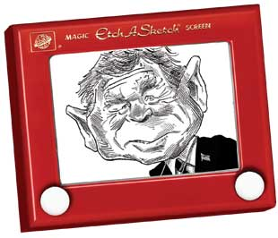

|

We're not in Lake Wobegon anymore
An adapted excerpt from the new book Homegrown Democrat
- - - - - - - - - -
by Garrison Keillor
 OMETHING HAS GONE SERIOUSLY HAYWIRE with the Republican Party. Once, it was the party of pragmatic Main Street businessmen in steel-rimmed spectacles who decried profligacy and waste, were devoted to their communities and supported the sort of prosperity that raises all ships. They were good-hearted people who vanquished the gnarlier elements of their party, the paranoid Roosevelt-haters, the flat Earthers and Prohibitionists, the antipapist antiforeigner element. The genial Eisenhower was their man, a genuine American hero of D-Day, who made it OK for reasonable people to vote Republican. He brought the Korean War to a stalemate, produced the Interstate Highway System, declined to rescue the French colonial army in Vietnam, and gave us a period of peace and prosperity, in which (oddly) American arts and letters flourished and higher education burgeoned -- and there was a degree of plain decency in the country. Fifties Republicans were giants compared to today's. Richard Nixon was the last Republican leader to feel a Christian obligation toward the poor. OMETHING HAS GONE SERIOUSLY HAYWIRE with the Republican Party. Once, it was the party of pragmatic Main Street businessmen in steel-rimmed spectacles who decried profligacy and waste, were devoted to their communities and supported the sort of prosperity that raises all ships. They were good-hearted people who vanquished the gnarlier elements of their party, the paranoid Roosevelt-haters, the flat Earthers and Prohibitionists, the antipapist antiforeigner element. The genial Eisenhower was their man, a genuine American hero of D-Day, who made it OK for reasonable people to vote Republican. He brought the Korean War to a stalemate, produced the Interstate Highway System, declined to rescue the French colonial army in Vietnam, and gave us a period of peace and prosperity, in which (oddly) American arts and letters flourished and higher education burgeoned -- and there was a degree of plain decency in the country. Fifties Republicans were giants compared to today's. Richard Nixon was the last Republican leader to feel a Christian obligation toward the poor.
In the years between Nixon and Newt Gingrich, the party migrated southward down the Twisting Trail of Rhetoric and sneered at the idea of public service and became the Scourge of Liberalism, the Great Crusade Against the Sixties, the Death Star of Government, a gang of pirates that diverted and fascinated the media by their sheer chutzpah, such as the misty-eyed flag-waving of Ronald Reagan who, while George McGovern flew bombers in World War II, took a pass and made training films in Long Beach. The Nixon moderate vanished like the passenger pigeon, purged by a legion of angry white men who rose to power on pure punk politics. “Bipartisanship is another term of date rape,” says Grover Norquist, the Sid Vicious of the GOP. “I don't want to abolish government. I simply want to reduce it to the size where I can drag it into the bathroom and drown it in the bathtub.” The boy has Oedipal problems and government is his daddy.
The party of Lincoln and Liberty was transmogrified into the party of hairy-backed swamp developers and corporate shills, faith-based economists, fundamentalist bullies with Bibles, Christians of convenience, freelance racists, misanthropic frat boys, shrieking midgets of AM radio, tax cheats, nihilists in golf pants, brownshirts in pinstripes, sweatshop tycoons, hacks, fakirs, aggressive dorks, Lamborghini libertarians, people who believe Neil Armstrong's moonwalk was filmed in Roswell, New Mexico, little honkers out to diminish the rest of us, Newt's evil spawn and their Etch-A-Sketch president, a dull and rigid man suspicious of the free flow of information and of secular institutions, whose philosophy is a jumble of badly sutured body parts trying to walk. Republicans: The No.1 reason the rest of the world thinks we're deaf, dumb and dangerous.
Rich ironies abound! Lies pop up like toadstools in the forest! Wild swine crowd round the public trough! Outrageous gerrymandering! Pocket lining on a massive scale! Paid lobbyists sit in committee rooms and write legislation to alleviate the suffering of billionaires! Hypocrisies shine like cat turds in the moonlight! O Mark Twain, where art thou at this hour? Arise and behold the Gilded Age reincarnated gaudier than ever, upholding great wealth as the sure sign of Divine Grace.
Here in 2004, George W. Bush is running for reelection on a platform of tragedy -- the single greatest failure of national defense in our history, the attacks of 9/11 in which 19 men with box cutters put this nation into a tailspin, a failure the details of which the White House fought to keep secret even as it ran the country into hock up to the hubcaps, thanks to generous tax cuts for the well-fixed, hoping to lead us into a box canyon of debt that will render government impotent, even as we engage in a war against a small country that was undertaken for the president's personal satisfaction but sold to the American public on the basis of brazen misinformation, a war whose purpose is to distract us from an enormous transfer of wealth taking place in this country, flowing upward, and the deception is working beautifully.
The concentration of wealth and power in the hands of the few is the death knell of democracy. No republic in the history of humanity has survived this. The election of 2004 will say something about what happens to ours. The omens are not good.
Our beloved land has been fogged with fear -- fear, the greatest political strategy ever. An ominous silence, distant sirens, a drumbeat of whispered warnings and alarms to keep the public uneasy and silence the opposition. And in a time of vague fear, you can appoint bullet-brained judges, strip the bark off the Constitution, eviscerate federal regulatory agencies, bring public education to a standstill, stupefy the press, lavish gorgeous tax breaks on the rich.
There is a stink drifting through this election year. It isn't the Florida recount or the Supreme Court decision. No, it's 9/11 that we keep coming back to. It wasn't the “end of innocence,” or a turning point in our history, or a cosmic occurrence, it was an event, a lapse of security. And patriotism shouldn't prevent people from asking hard questions of the man who was purportedly in charge of national security at the time.
Whenever I think of those New Yorkers hurrying along Park Place or getting off the No.1 Broadway local, hustling toward their office on the 90th floor, the morning paper under their arms, I think of that non-reader George W. Bush and how he hopes to exploit those people with a little economic uptick, maybe the capture of Osama, cruise to victory in November and proceed to get some serious nation-changing done in his second term.
This year, as in the past, Republicans will portray us Democrats as embittered academics, desiccated Unitarians, whacked-out hippies and communards, people who talk to telephone poles, the party of the Deadheads. They will wave enormous flags and wow over and over the footage of firemen in the wreckage of the World Trade Center and bodies being carried out and they will lie about their economic policies with astonishing enthusiasm.
The Union is what needs defending this year. Government of Enron and by Halliburton and for the Southern Baptists is not the same as what Lincoln spoke of. This gang of Pithecanthropus Republicanii has humbugged us to death on terrorism and tax cuts for the comfy and school prayer and flag burning and claimed the right to know what books we read and to dump their sewage upstream from the town and clear-cut the forests and gut the IRS and mark up the constitution on behalf of intolerance and promote the corporate takeover of the public airwaves and to hell with anybody who opposes them.
This is a great country, and it wasn't made so by angry people. We have a sacred duty to bequeath it to our grandchildren in better shape than however we found it. We have a long way to go and we're not getting any younger.
Dante said that the hottest place in Hell is reserved for those who in time of crisis remain neutral, so I have spoken my piece, and thank you, dear reader. It's a beautiful world, rain or shine, and there is more to life than winning.
Reprinted from In These Times

|